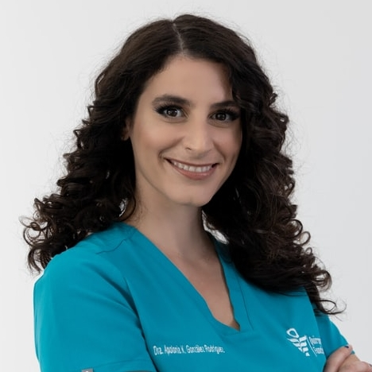

Harold Arato, DMD
Harold has been a certified dentist for over 25 years. Dr. Arato, originally from Hungary, brought his
excellent skills, expertise and personality to San Antonio.
His friendly, outgoing personality and talents have made him a strong partner at San Antonio Central
Dentistry since 2012.
Weston Cunningham, DMD
Dr. Cunningham graduated with honors from The Ohio State University College of Dentistry. While in dental
school, he was particularly interested in general dentistry and preventive oral care. Having worked in
various clinics throughout Ohio, Weston moved
to San Antonio to strengthen the SACD team.
When not practicing dentistry, Dr. Cunningham enjoys outdoor activities such as hiking, fishing, and
mountain
biking.
Sarah Connor, DDS
Dr. Sarah Connor received her undergraduate degree from Brigham Young University where she met and married
her husband, Michael. They then moved to Ohio to attend the Ohio State University where she graduated
Summa Cum Laude with her Doctorate of Dental Surgery. A particluar professional interest of Dr. Connor is
wisdom tooth removal and post-op treatment.

Aaliyah Al-Nomani, DMD
Coming to San Antonio from Qatar, Aaliyah graduated from King Abdulaziz University in Saudi Arabia with
honors, after which she completed her dental residency program in San Antonio. Dr. Al-Nomani is dedicated to
providing patients with the best experience, and her outgoing personality only helps in delivering smiles on
a constant basis.
Anna Jones, DDS
Dr. Jones is a native of Texas. She has three wonderful children and lives in
Devola.
Dr. Jones graduated from Ohio University with an undergraduate degree in history, then went to Ohio
State University for dental school, graduating with honors. Upon graduation, Dr. Jones received the American
Academy of Implant Dentistry
Award for outstanding achievement.
Prakash Patel, DMD
Dr. Patel graduated from The University of Texas School of Dentistry and resides in San Antonio. Dentistry
has
been a lifelong pursuit and passion for him and you are sure to see that reflected in his smile if you see
him in the office!
When he is not in the dental office, Dr. Patel loves to be outdoors enjoying other hobbies such as fishing,
hunting and camping with his wife and four children! Don’t hesitate to say hi if you see him in the office
or around town!